Commissioning is the process of initializing the devices to join a network and to work
together. The Zigbee Base Device Behaviour specification specifies the procedures for the
following commissioning mechanisms which are executed in the order as provided
below.
A node may support the proximity based commissioning mechanism.
If touchlink commissioning is supported, the node shall support
touchlink as an initiator, a target or both.
Initiator: Will be a member of an existing
network or (if not) will create a new network
Target: Gets added to network by Initiator
2
Network Steering
All nodes must support network steering.
Node not on a network: Action of searching for
and joining an open network.
Node on a network: It is the action of opening
the network to allow new nodes to join
3
Network Formation
The ability of a node to form a network with its network security
model. It shall be dependent on the logical device type of the
node
Zigbee coordinator: Forms a Centralized security
networks
Zigbee router: Forms a Distributed security
network
4
Finding & Binding
Initiator Endpoint: Automatically searches and
establishes application connections with target
endpoint, by using the identify cluster with matching
cluster
Target Endpoint: Handles finding and binding
requests from initiator endpoint
Here, Touchlink, Steering and Formation decides zigbee network joining procedure. Finding & binding is not related to joining procedure, but involves application level connections for cluster data transaction, to be done in any joining procedure.
Default Mapping of Commissioning to zigbee device types :
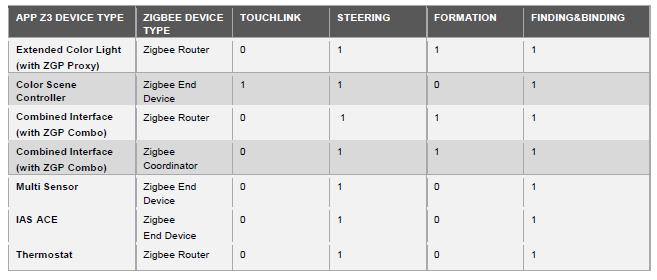
This is configurable from MPLAB Code Configurator (MCC) while generating the
project:
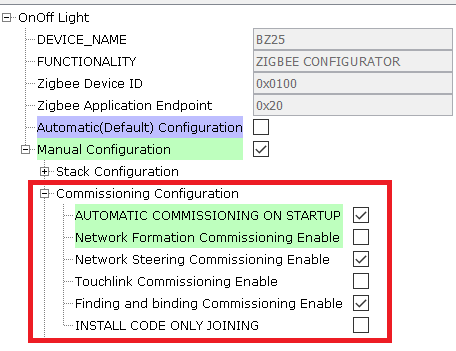
The commissioning procedure can be automatically started when the device is first powered on, based on the 4 Commissioning Aspects (Touchlink, steering, formation, finding & binding) chosen in above MPLAB Code Configurator (MCC). This is referred as auto commissioning.
The application can also choose invoking this commisioning procedure manually through user input. In Microchip zigbee reference applications this is demonstrated through sending console commands through UART. This way of commissioning is referred as manual commissioning.
Auto Commissioning
Auto-commissioning/commissioning on startup is the easiest way of commissioning, which involves automatic commissioning of devices. It allows for minimal (or no) human intervention, since most of the startup parameters are pre-configured .The flowchart for the commissioning mode based on 4 commissioning aspect flags in Zigbee Application is described below :
Figure 4-4. Flowchart for Commissioning
Procedure.
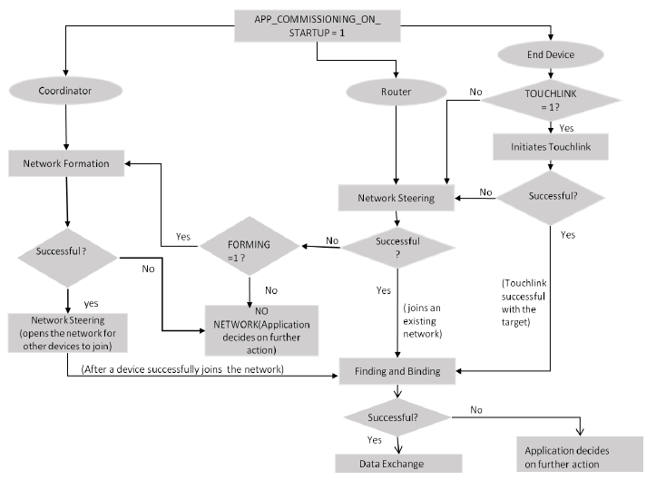
This type of commissioning can be enabled by user, using the MPLAB Code
Configurator (MCC) as illustrated in the following image:
Figure 4-5. .
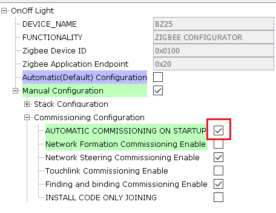
Following is the example of auto commissioning procedure between Combined Interface and
Thermostat applications.
After Combined Interface application is programmed on the device, automatically
device starts the commissioning procedure and creates the network.
Program another device with Thermostat application.
After that the device joins , the joiner(Thermostat) starts reporting attribute
data back to the Combined Interface device. Here there is no user input needed
to initiate the commissioning. It can be observed below in the console logs
:
Note: "resetToFN" console command is used to bring
the device to factory default state and reset the device. This step is
needed only if the UART terminal is not setup before the device gets power
on first and if logs are missed in terminal.
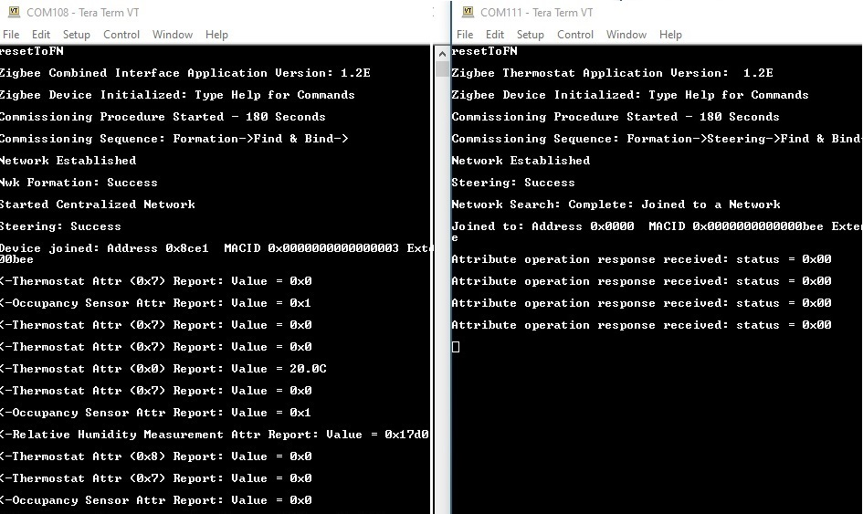
Manual Commissioning ( UART Enabled)
Manual mode of commissioning is configured using the following MPLAB Code Configurator (MCC) :
Figure 4-6. .
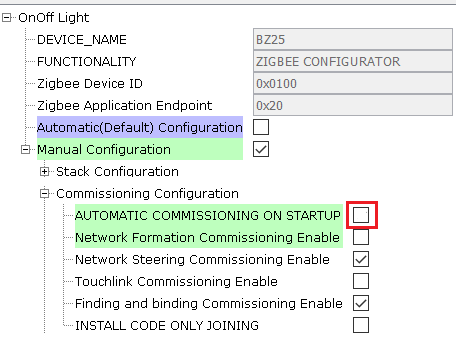
To trigger the commissioning procedures manually, the user has to issue the following console commands as given below:
Touchlink – “invokeCommissioning 1 0” (The device starts touchlink as an initiator)
Network Steering – “invokeCommissioning 2 0” (the device starts to search for a network to
join. If device is already part of the network and has the "Router" capability,
it will open the network for other devices to join)
Network Formation – “invokeCommissioning 4 0” (If the device is a router or a coordinator,
forms the network)
Finding & Binding - “invokeCommissioning 8 0” (this command shall be
given for any the devices which needs to be bound for clusters) - SetFBRole 1
(this command to be given on application endpoint acts as initiator which
initiates the binding procedure by sending identify query request) - SetFBRole 0
(this command to be given on application endpoint acts as target)
Note: Permit Join flag is enabled for 180 seconds after
forming a network and opens up the network for a finite duration to allow other
nodes to join. To allow the joining even after 180 secs, give "setPermitJoin
180" or “invokeCommissioning 2 0” command from the console. The above mentioned
note holds good for both Commissioning on Startup (auto) and manual
commissioning procedure
The following table describes the list of manual commissioning command sequences to be followed
between 2 joining devices.
8. Light - invokeCommissioning 8 0 (After this all the Finding
and Binding happens)
9. Light Device will start reporting peridically
Note:
invokeCommissioning 8 0 has to be executed first on target device then on
initiator device.
SetFBRole 0 sets device as Target, SetFBRole 1 sets the device as
Initiator. A single device can act as initiator and/or target
Figure 4-7. Combined interface and Thermostat.
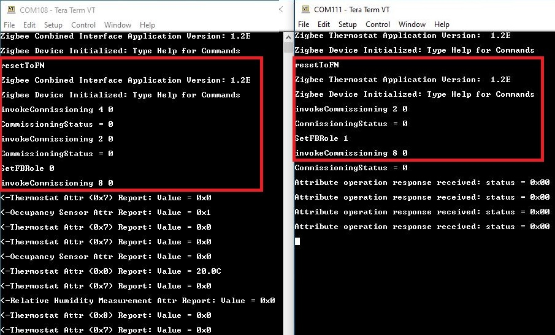
Figure 4-8. Combined interface and Multi-sensor.
Figure 4-9. Combined interface and Extended Lights.
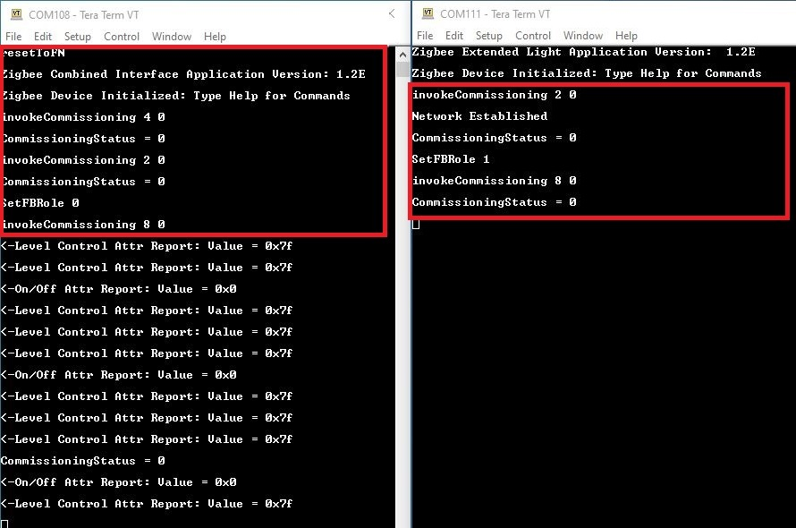
Touchlink Commissioning
The zigbee protocol provides special commissioning called Touchlink , which is an easy-to-use proximity mechanism for commisioning a device to a network. This method works by the Touchlink 'initiator' determining the proximity of the target device (to be commissioned) and negotiating/transferring network parameters. Touchlink commissioning can be used to form a new network and/or join a node to an existing network. Touchlink is initiated on a node called the ‘initiator’. Touchlink is provided as a cluster in the ZigBee Cluster Library (ZCL). The initiator must support the Touchlink cluster as a client and the target node must support the cluster as a server. If it is required on a node, Touchlink commissioning must be enabled via the ZigBee Base Device attribute bdbCommissioningMode.
Figure 4-10. Wireshark Sniffer logs.
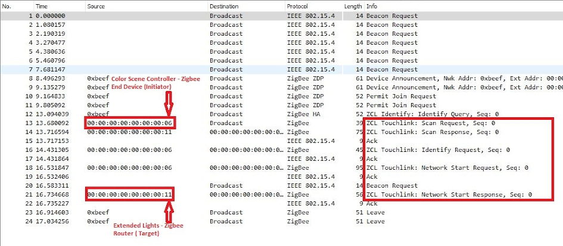
Let us look into an example. Here a ColorSceneController which is an end device type will bring the light into the network and by asking light to form the distributed network via Touchlink. For touchlink, a color scene controller shall be brought close to a target( Light) device around like 20-30cms range. It can be done in the following 2 ways :
Auto-commissioning : In order to establish touchlink via
auto-commissioning , each of the application e.g. extended lights and color
scene controller, MPLAB Code Configuration (MCC) has to be updated as shown
below :
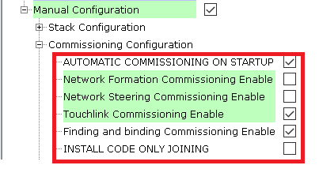
During auto commissioning mode , the device would perform touchlink by
default. To initiate the process, input "resetToFN" console command
on the light device first followed by the color scene controller. After that
the device joins via touchlink, the Light device starts reporting attribute
data back to the ColorSceneController device. It can be observed below in
:
Figure 4-11. Console
Logs.
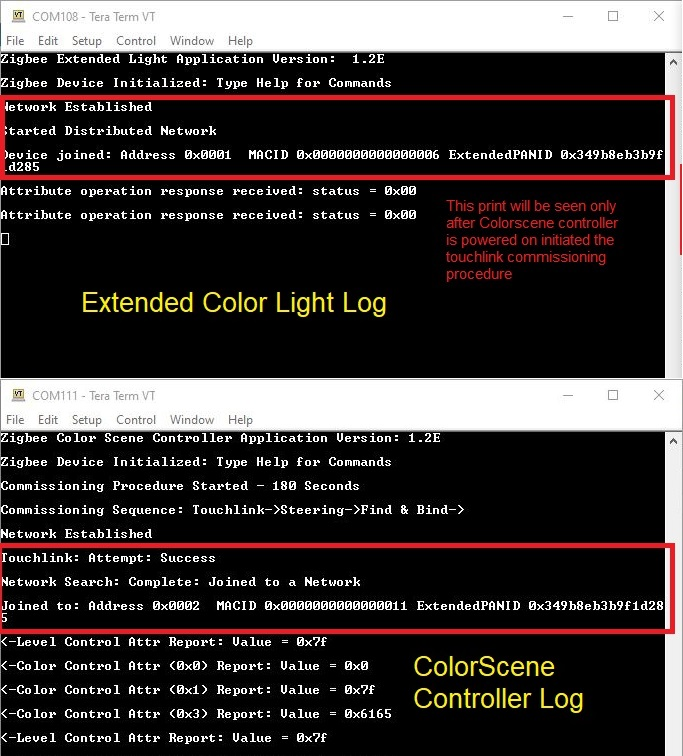
Manual commisioning : In order to establish touchlink commissioning
manually, each of the application e.g. extended lights and color scene
controller, MPLAB Code Configurator (MCC) has to be updated as shown below :
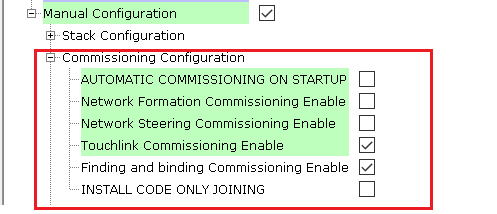
During manual commissioning mode , we need to issue console commands on
the color scene controller device to perform touchlink. In order to initiate
the process, input resetToFN console comand on the light device first
followed by the color scene controller. Follow the below sequence of
commands
Light and CSC - resetToFN
CSC - invokeCommissioning 1 0 (Touchlink commisioning, wait for
touchlinking to be completed)